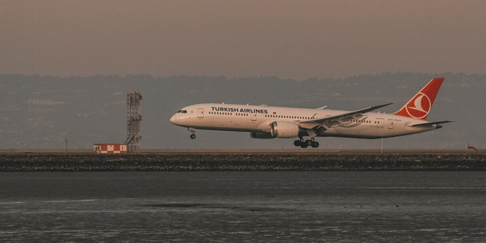
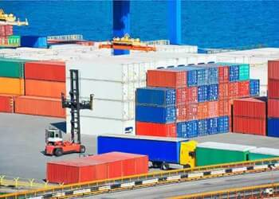
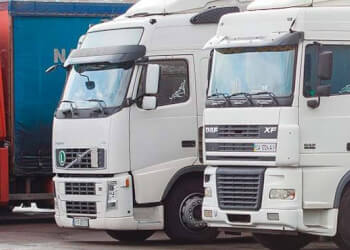

МІЖНАРОДНІ АВІАПЕРЕВЕЗЕННЯ
Авіаційні перевезення вантажів – зручний і швидкий спосіб транспортування товару. Літаком зазвичай доставляються невеликі вантажні партії, дорогі товари або швидкопсувні продукти. Якщо в пріоритеті швидкість і підвищена безпека, варто обрати авіаперевезення.
НАШІ ПОСЛУГИ
- чартерні авіаперевезення
- інтермодальні перевезення
- авіаперевезення збірних вантажів (консолідація вантажів у країнах відправки)
- авіаперевезення небезпечних, негабаритних і швидкопсувних вантажів
- доставка вантажів вантажними і пасажирськими рейсами
- організація авіаперевезень на території третіх країн
- складська логістика в Україні та інших країнах
- митне оформлення
- бробка вантажів в аеропортах: як українських, так і міжнародних
- страхування вантажу
- оформлення документів на вантаж

ПЕРЕВАГИ АВІАПЕРЕВЕЗЕНЬ
Доступ у будь-який куточок світу. Більшість авіаперевізників мають розгалужену мережу аеропортів, виконують як внутрішні, так і міжнародні рейси.
Економія часу. Вантажні віаперевезення істотно прискорюють процес транспортування. Оскільки комерційні рейси відправляються часто і регулярно, тривалих затримок в доставці вантажів літаком практично не буває. Навіть якщо запланований рейс відкладено, вантаж зазвичай відправляють наступним літаком.
Невисока вартість страхування. Авіаперевезення вантажів здійснюються за відносно короткий час, відповідно страховий поліс для такого виду перевезення коштує значно дешевше, ніж для морської або автодоставки.
Можливість відстежувати вантаж. Багато авіакомпаній надають можливість відстежувати товар. Це означає, що ви зможете стежити за прогресом доставки вантажу з моменту відправлення до прибуття в аеропорт призначення. Компанія «Гуд Логістик» займається організацією міжнародних авіаперевезень та над
МІЖНАРОДНІ АВІАПЕРЕВЕЗЕННЯ
Морські перевезення – один із найбезпечніших і найбільш економічно вигідних способів доставки товару Компанія «Гуд Логістик» займається організацією морських перевезень в Україну з Китаю, США, Європи, Африки, Південно-Східної Азії, в зворотному напрямку і між третіми країнами.
Також ми виконуємо морські перевезення у США для e-commerce на склади FBA Amazon.
НАШІ ПОСЛУГИ
- організовуємо морські перевезення в Україну з Азії, США, Африки і в зворотному напрямку з 2014 року
- входимо до складу авторитетних міжнародних логістичних організацій FIATA, WCA, Lognet Global
- маємо прямі договори з морськими лініями і зв’язки з агентами в більш ніж 200 країнах світу
- маршрути, які ми складаємо для клієнтів, завжди економічно раціональні
- допомагаємо зібрати і оформити документи на вантаж, пройти митне очищення
- наші менеджери постійно відстежують місцезнаходження і стан вантажу
- на випадок форс-мажорних ситуацій ми надаємо послугу страхування вантажу

МІЖНАРОДНІ АВТОМОБІЛЬНІ ПЕРЕВЕЗЕННЯ
Компанія «Гуд Логістік» займається організацією міжнародних автомобільних вантажоперевезень з 2014 року. Ми допомагаємо доставляти контейнери вантажними машинами, здійснювати автоперевезення з/в Україну, по Європі, на території Південної та Північної Америки, Азії (в тому числі Китай, Корея), Африки
НАШІ ПОСЛУГИ
- одне з найбільш ефективних і доступних автотранспортних рішень
- швидка і планова поставка – максимально точний час доставки «just in time» (точно у строк)
- гнучкість маршруту і маневровість – можливість доставити машину на місце збору вантажу без перевантажень
- доставка «від дверей до дверей»
